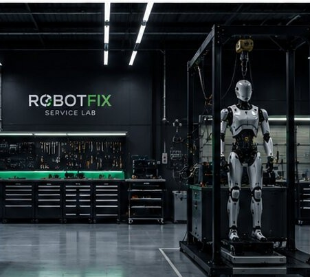
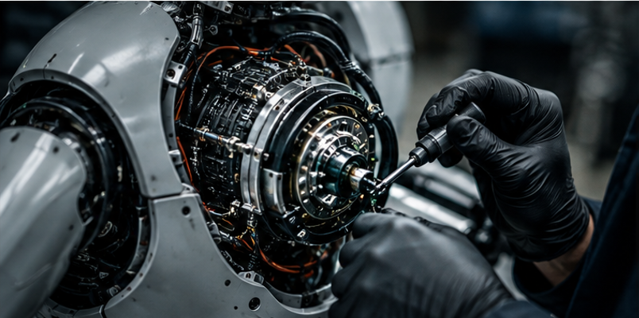

01 / DIAGNOSTICS
Diagnose & foutanalyse
Systematisch opsporen van mechanische, elektrische, elektronische en softwarematige storingen.
RobotFix biedt technische diagnose, reparatie en onderhoud voor humanoïde en geavanceerde robots. Van mechanische storingen tot elektronica, sensoren en software.

Robotproblemen zitten vaak niet in één onderdeel. Daarom bekijken we het volledige systeem: mechanica, elektronica, sensoren, aandrijving en software.
Systematisch opsporen van mechanische, elektrische, elektronische en softwarematige storingen.
Onderzoek van gewrichten, aandrijvingen, tandwielen, verbindingen en andere bewegende onderdelen.
Diagnose van printplaten, bekabeling, voedingen, batterijsystemen en communicatie tussen componenten.
Controle van camera's, sensoren, encoders en andere meet- en feedbacksystemen.
Technische analyse van firmware, configuratie, communicatieproblemen en softwaregerelateerde storingen.
Preventieve inspectie en onderhoud om problemen vroeg te detecteren en de betrouwbaarheid te verbeteren.

Humanoïde robots combineren complexe mechanica, krachtige actuatoren, sensoren, elektronica en software in één systeem. RobotFix bouwt expertise op rond precies die combinatie.
We kijken naar de oorzaak van een storing, niet alleen naar het onderdeel dat defect lijkt.
Een technische aanpak gebaseerd op metingen, diagnose en gecontroleerde tests.
Geen fabrikantclaim. We bouwen onafhankelijk technische kennis op rond verschillende roboticaplatformen.
Eerst begrijpen wat er misgaat. Daarna pas repareren. Zo vermijden we onnodige onderdelen en kosten.
U beschrijft het probleem en, indien mogelijk, bezorgt u foto's of video.
We onderzoeken de robot en bepalen de vermoedelijke oorzaak en reparatiemogelijkheden.
U ontvangt een duidelijke inschatting van de nodige werkzaamheden voordat de reparatie start.
Na de reparatie wordt het systeem getest voordat het terug naar de klant gaat.
We richten ons op robots waarbij technische kennis, diagnose en herstel belangrijker zijn dan massaproductie.
Focusgebied: gewrichten, actuatoren, sensoren, elektronica, voeding en systeemdiagnose.
Technische ondersteuning voor prototypes, onderzoeksplatformen en experimentele systemen.
Diagnose en herstel van geselecteerde consumenten- en hobbyrobots.
Niet zeker of we uw robot kunnen ondersteunen? Neem contact op en beschrijf het systeem.
Onafhankelijke technische robotservice vanuit België.
RobotFix is ontstaan vanuit een sterke interesse in robotica en technische systemen. Met een achtergrond in elektronica en automatisatie ligt de focus op het begrijpen van hoe systemen werkelijk functioneren.
De ambitie is eenvoudig: een betrouwbare technische partner worden voor eigenaars en ontwikkelaars van geavanceerde robots die niet zomaar naar een klassieke reparatiewerkplaats kunnen.
RobotFix is een groeiende service. We bouwen onze expertise, tools en ondersteunde platformen verder uit naarmate de markt voor humanoïde en geavanceerde robots groeit.
Niet noodzakelijk. We breiden onze ondersteunde platformen geleidelijk uit. Stuur ons het merk, model en probleem en we bekijken of we kunnen helpen.
Ja. Een technische diagnose kan de eerste stap zijn voordat er beslist wordt welke reparatie nodig is.
Dat hangt af van het type robot en de storing. Bij sommige problemen kan vooraf advies of diagnose op afstand mogelijk zijn.
Ja. RobotFix richt zich zowel op particuliere eigenaars als op bedrijven, ontwikkelaars en onderzoeksomgevingen.
Beschrijf uw robot en het probleem zo duidelijk mogelijk. Foto's, video's en foutmeldingen helpen ons om sneller een eerste technische inschatting te maken.
Dit formulier opent uw e-mailprogramma met de ingevulde gegevens. We nemen daarna persoonlijk contact op.